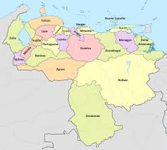

Mapa de venezuela

Venezuela, oficialmente República Bolivariana de Venezuela,5n 2 es un país soberano situado en la parte septentrional de América del Sur y el Caribe, constituido por un área continental y por un gran número de islas e islotes en el mar Caribe, cuya capital y mayor aglomeración urbana es la ciudad de Caracas.n 3
Posee una extensión territorial de 916 445 km². El territorio continental limita al norte con el mar Caribe y el océano Atlántico, al oeste con Colombia, al sur con Brasil y por el este con Guyana. Con este último país, el Estado venezolano mantiene una reclamación sobre 159 542 km² de territorio al oeste del río Esequibo, esta área es conocida como Guayana Esequiba o Zona en Reclamación6, anteriormente bajo el control de Guayana Neerlandesa. Por sus espacios marítimos, ejerce soberanía sobre 71 295 km² de mar territorial,7 22 224 km² en su zona contigua,7 471 507 km² del mar Caribe y del océano Atlántico bajo el concepto de zona económica exclusiva,8910 y 99 889 km² de plataforma continental.10 Esta zona marina limita con las de trece Estados.11 El país tiene una biodiversidad muy alta y ocupa el séptimo lugar en la lista mundial de naciones con mayor cantidad de especies. Existen hábitats que van desde las montañas de los Andes en occidente hasta la selva tropical de la cuenca del Orinoco en el sur, a través de las extensas planicies de los Llanos, la costa del Caribe y el delta del río Orinoco en el oriente.
Venezuela, oficialmente República Bolivariana de Venezuela,5n 2 es un país soberano situado en la parte septentrional de América del Sur y el Caribe, constituido por un área continental y por un gran número de islas e islotes en el mar Caribe, cuya capital y mayor aglomeración urbana es la ciudad de Caracas.n 3
Posee una extensión territorial de 916 445 km². El territorio continental limita al norte con el mar Caribe y el océano Atlántico, al oeste con Colombia, al sur con Brasil y por el este con Guyana. Con este último país, el Estado venezolano mantiene una reclamación sobre 159 542 km² de territorio al oeste del río Esequibo, esta área es conocida como Guayana Esequiba o Zona en Reclamación6, anteriormente bajo el control de Guayana Neerlandesa. Por sus espacios marítimos, ejerce soberanía sobre 71 295 km² de mar territorial,7 22 224 km² en su zona contigua,7 471 507 km² del mar Caribe y del océano Atlántico bajo el concepto de zona económica exclusiva,8910 y 99 889 km² de plataforma continental.10 Esta zona marina limita con las de trece Estados.11 El país tiene una biodiversidad muy alta y ocupa el séptimo lugar en la lista mundial de naciones con mayor cantidad de especies. Existen hábitats que van desde las montañas de los Andes en occidente hasta la selva tropical de la cuenca del Orinoco en el sur, a través de las extensas planicies de los Llanos, la costa del Caribe y el delta del río Orinoco en el oriente.